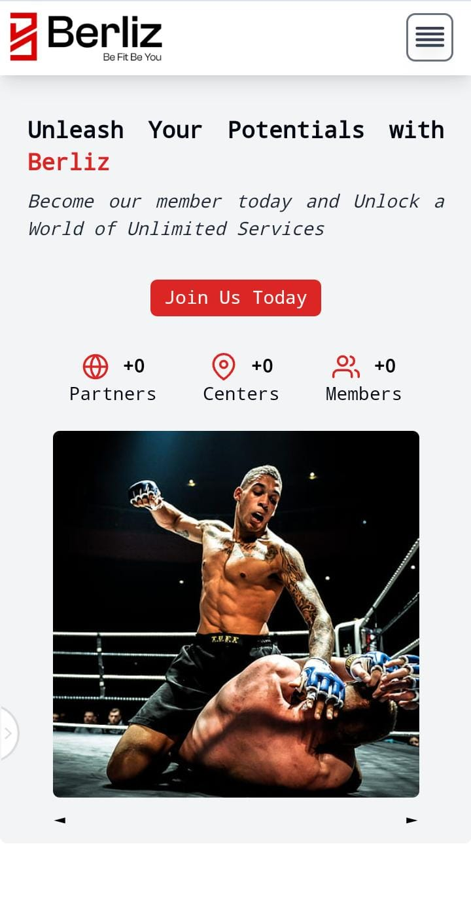
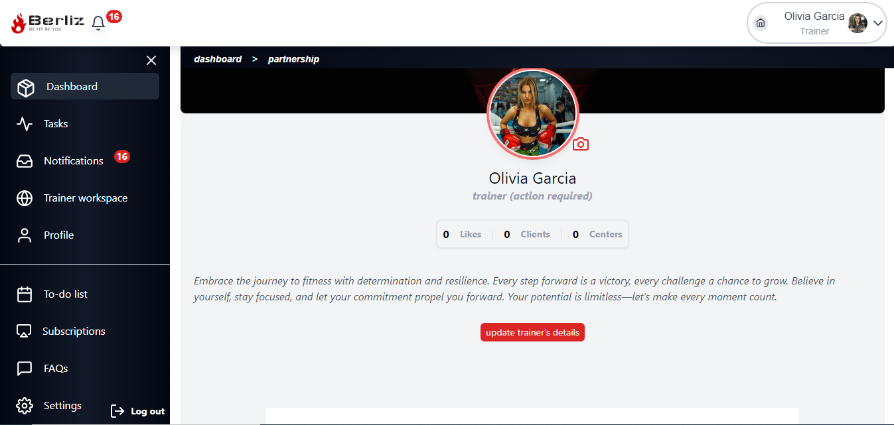
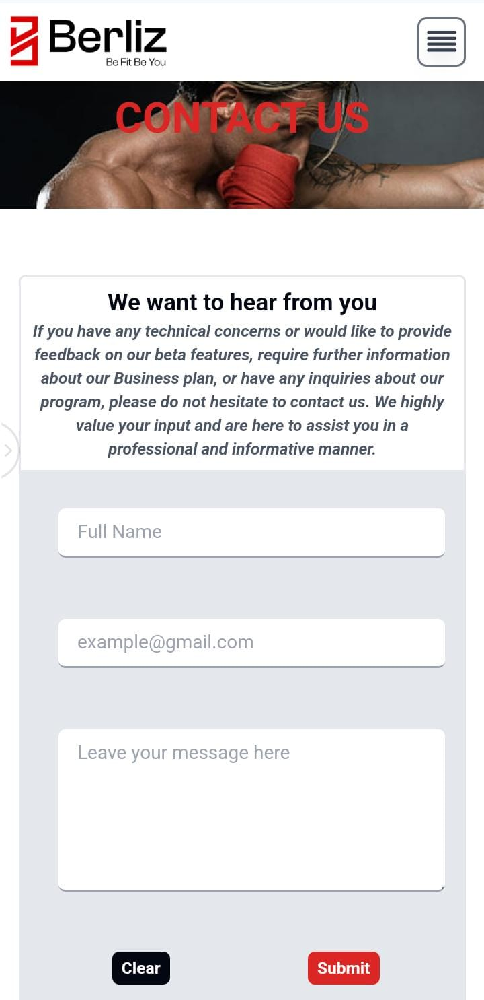

<div class="shadow-lg text-xl font-sans text-light-gray bg-gradient-to-b from-lemon-green via-dark-blue to-dark-blue">
    <div class="p-8 py-48">
        <p class="text-xl md:text-4xl font-sans text-center mb-4 text-dark-blue font-bold">
            Revolutionizing Fitness: The Berliz Platform
        </p>
        <div class="flex items-center justify-center mt-4">
            <div class="grid grid-cols items-center">
                <div class="flex items-center justify-center md:justify-start mt-8">
                    
                    
                </div>
                <div class="text-sm md:text-md font-sans p-2 text-justify md:p-8">
                    <div class="grid grid-cols md:grid-cols-2 font-mono">
                        <div class="p-0 md:p-4">
                            <p class="p-2 mt-4">
                                Berliz stands as a testament to my dedication and passion for web development. As a
                                platform
                                designed to help users achieve their fitness goals, Berliz serves as a bridge connecting
                                trainers, clients, and gym centers. Its innovative features promise to transform lives
                                by
                                fostering a supportive and collaborative fitness community.
                            </p>

                            <p class="p-2 mt-4">
                                Developed using modern frameworks such as Angular and Spring Boot, Berliz boasts a rich
                                user interface and seamless functionality. Attention to detail is evident in every
                                aspect
                                of the platform, ensuring an unparalleled user experience. Despite its ongoing
                                development,
                                Berliz already showcases my expertise in web development and my commitment to pushing
                                boundaries to deliver exceptional results.
                            </p>

                            <p class="p-2 mt-4">
                                Berliz represents the culmination of my skills and experiences, demonstrating my
                                proficiency
                                in front-end and back-end technologies. Through its continued evolution, Berliz aims
                                to
                                introduce even more features and enhancements, further solidifying its position as a
                                game-changing platform in the fitness industry.
                            </p>

                            <div class="flex justify-center items-center p-2 md:p-8 mt-16 hidden md:block">
                                <button class="p-2 py-2 border-2 border-lemon-green text-white font-bold font-sans rounded-md 
                                     mr-8 md:mr-64 cursor-pointer whitespace-nowrap"
                                    (click)="openVoting('https://berliz.netlify.app/')">
                                    <span class="p-2">Explore Berliz</span>
                                    <i-feather name="globe" class="-mt-1 text-lemon-green" style="width: 30px;">
                                    </i-feather>
                                </button>
                            </div>
                        </div>
                        
                    </div>
                    <div class="flex justify-center p-2 md:p-8 mt-4 block md:hidden">
                        <button class="p-2 py-2 border-2 border-lemon-green text-white font-bold font-sans rounded-md 
                             mr-8 md:mr-64 cursor-pointer" (click)="openVoting('https://berliz.netlify.app/')">
                            <span class="p-2">Explore Berliz</span>
                            <i-feather name="globe" class="-mt-1 text-lemon-green" style="width: 30px;"> </i-feather>
                        </button>
                    </div>
                </div>
            </div>
        </div>
        <div class="p-4">
            
        </div>
        <div class="p-4 grid grid-cols md:grid-cols-3">
            <div class="p-2">
                
            </div>
            <div class="p-2">
                
            </div>
            <div class="p-2">
                
            </div>
        </div>
    </div>
</div>